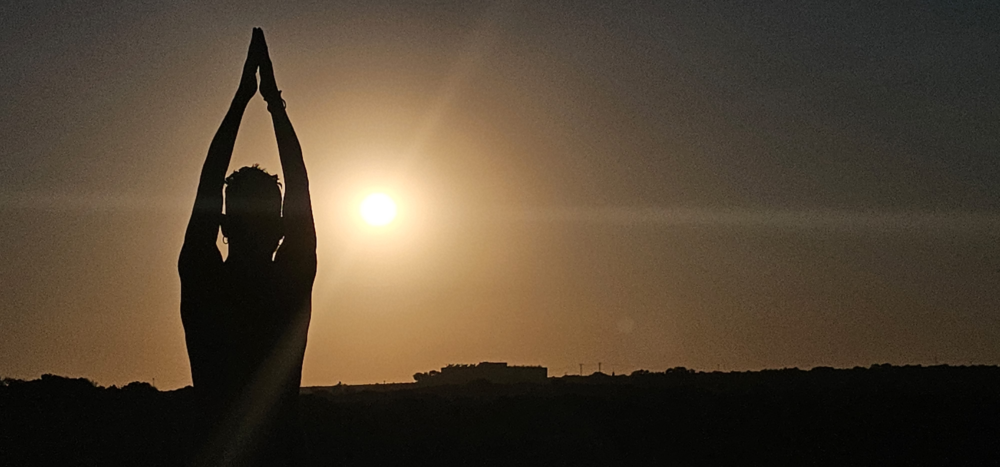

Vacaciones
25/07/23

Esta fotografía esta tomada con el estupendo atardecer que se puede observar desde Guardamar del Segura (Alicante)
Loki
28/08/23

El travieso Loki jugando con una cuerda, en pleno día de verano
Vistas al mar
28/08/23

Otra de las maravillosas vistas desde la playa. La foto se realizó en plena ola de calor en agosto. ¡Qué ganas de verano!